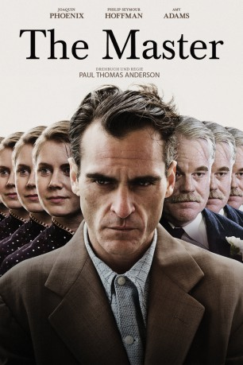
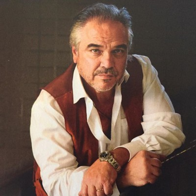
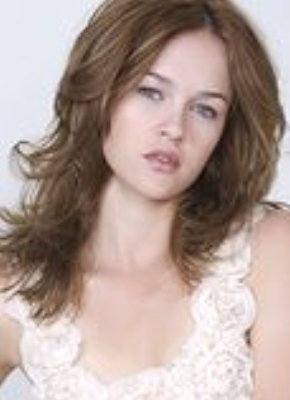
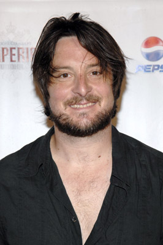

#1582 The Master
Auszeichnungen: für 3 Oscars nominiert
 
 IMDB-Wertung: 7.1 / 10
IMDB-Wertung: 7.1 / 10  Metascore: 86
Metascore: 86 
Nach all dem Grauenhaften, das Lancaster Dodd im Zweiten Weltkrieg erlebt hat, kehrt er gebrochen in die USA zurück. Auf der Suche nach sich selbst, gründet der charismatische und intellektuelle Dodd bald eine glaubensorientierte Organisation. Der junge Herumtreiber Freddie Sutton wird schnell seine rechte Hand und ist als bald nicht mehr von der Seite des Masters wegzudenken. Doch nach einiger Zeit kommen Freddie Sutton Zweifel an den Idealen der Organisation.
Jahr: 2012
Dauer: 144 Minuten
FSK: 12
Land: USA Studio: Weinstein Company, TheTonspuren: DTS - ,
Untertitel: Deutsch,
Auflösung: 1080p (1920x1040) Größe: 8120 MB
Genre: Drama
Regisseur:  Paul Thomas Anderson
Paul Thomas Anderson
Drehbuch: Paul Thomas Anderson
Soundtrack: Jonny Greenwood
Darsteller:
 Joaquin Phoenix als Freddie Quell
Joaquin Phoenix als Freddie Quell Price Carson als V.A. Doctor
Price Carson als V.A. Doctor- Mike Howard als Rorschach Doctor
- Bruce Goodchild als V.A. Doctor / Interview
- Andrew Koponen als V.A. Patient
- Jeffrey W. Jenkins als V.A. Patient
- Kevin Hudnell als Portrait Customer
- Kody Klein als Portrait Customer
 Amy Ferguson als Martha the Salesgirl
Amy Ferguson als Martha the Salesgirl-  W. Earl Brown als Fighting Businessman
- Frank Bettag als Frank
- Ariel Felix als Filipino Worker
- Vladimir Velasco als Filipino Worker
- Katie Boland als Young Woman
 Philip Seymour Hoffman als Lancaster Dodd
Philip Seymour Hoffman als Lancaster Dodd Amy Adams als Peggy Dodd
Amy Adams als Peggy Dodd Jesse Plemons als Val Dodd
Jesse Plemons als Val Dodd-  Ambyr Childers als Elizabeth Dodd
 Rami Malek als Clark
Rami Malek als Clark Martin Dew als Norman Conrad
Martin Dew als Norman Conrad Joshua Close als Wayne Gregory
Joshua Close als Wayne Gregory Jillian Bell als Susan Gregory
Jillian Bell als Susan Gregory Lena Endre als Mrs. Solstad
Lena Endre als Mrs. Solstad Madisen Beaty als Doris Solstad
Madisen Beaty als Doris Solstad Kevin J. O'Connor als Bill William
Kevin J. O'Connor als Bill William- Patty McCormack als Mildred Drummond
- Mimi Cozzens als Chi Chi Crawford
- Brady Rubin als Michelle Mortimer
- Jill Andre als Beatrice Campbell
- Brigitte Hagerman als New York Party Girl
- Charley Morgan als New York Lawyer
-  Christopher Evan Welch als John More
 Laura Dern als Helen Sullivan
Laura Dern als Helen Sullivan- Barlow Jacobs als James Sullivan
- Liz Clare als Dancer
- Fiona Dourif als Dancer
- Baily Hopkins als Dancer
- Mari Kearney als Dancer
 David Warshofsky als Philadelphia Police
David Warshofsky als Philadelphia Police- Kimberly Ables Jindra als Processing Patient
- Theo Crisell als Jail Bird
- Eban Schletter als Band, Piano
- Scott Rodgers als Band, Drum
 Melora Walters als Band, Voice
Melora Walters als Band, Voice- Napoleon Ryan als Pub Customer
- Jennifer Neala Page als Winn Manchester
- Christine Ames als Fervent Follower - Phoenix , uncredited
- Robert Amico als Farm Foreman , uncredited
 AnnaCorey als Madam Grace Love Interest , uncredited
AnnaCorey als Madam Grace Love Interest , uncredited- James Barbour als Master's Cadet , uncredited
Datei: X:\2012(G-M)\Master, The (2012, FSK12, 1920x1040).mkv seit 23.07.2015
Festplatte: HD 2012(A-M)
 Es gibt insgesamt 112 Filme in der Gruppe '2012(G-M)'
Es gibt insgesamt 112 Filme in der Gruppe '2012(G-M)'